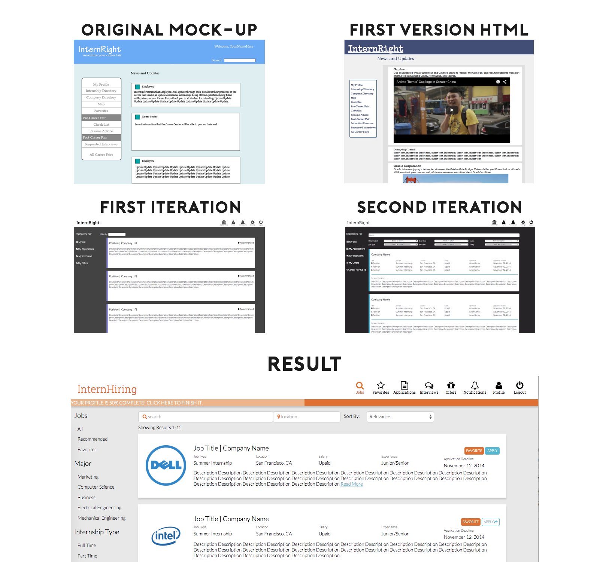

The project I worked on during my time at Nowent was a recruiting tool that was a layer on top of physical career fairs. The main goal of the solution was to provide students with information on the companies that were attending and the positions that would be available at a specific career fair.
The solution also contained follow-up resources for students and employers. For instance, employers would be able to receive a digital copy of a resume and then follow up with the student, schedule an interview, and extend an offer to students. Students, on the other hand, would be able to contact recruiters, schedule interviews, and receive notifications on upcoming deadlines and events.
During the course of the project, we refined our project scope but our goal remained unchanged: we wanted to make it easier for students and employers to both attend career fairs and follow up afterwards. It being 2014 (at the time), we saw no reason for students to return home after a career fair with a stack of paper flyers and business cards.
